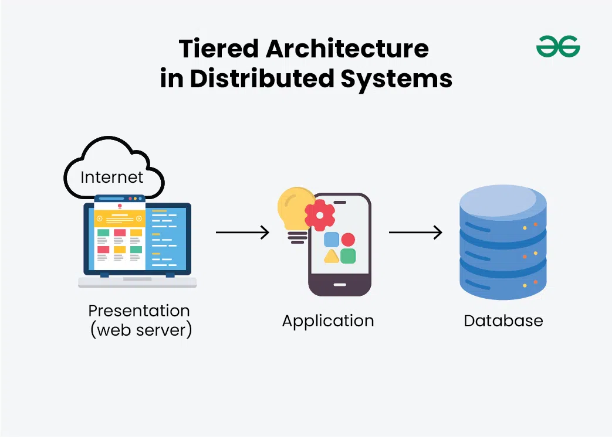

Multitier Architecture, also known as n-tier architecture, is a software design pattern that separates an application into multiple layers or tiers. Each tier is responsible for specific functions and communicates with other tiers to provide a complete application. The most common tiers in a multitier architecture are the presentation tier, the application tier and the data tier.
The presentation tier, also known as the user interface tier, is responsible for handling the user interface and user interactions. It is the layer that users interact with directly and is typically implemented using technologies such as HTML, CSS and JavaScript for web applications or frameworks like React or Angular for more complex applications. It handles user interactions and displays data in human-readable format.
The application tier, also known as the business logic tier or intermediary tier, is responsible for processing the business logic and rules of the application. It acts as an intermediary between the presentation tier and the data tier, handling requests from the presentation tier and interacting with the data tier to retrieve or manipulate data. This tier is typically implemented using programming languages such as Java, C# or Python.
The data tier, also known as the database tier or backend tier, is responsible for managing the data and database interactions of the application. It is where the application's data is stored, retrieved and manipulated. This tier typically uses a database management system (DBMS) such as MySQL, PostgreSQL or MongoDB to handle data storage and retrieval. It stores application data in a structured format thus is accessible to other tiers
